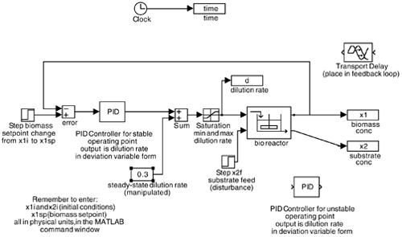

| [ Team LiB ] |
|
M7.5 SIMULINK Model FileIn order to save time on constructing your block diagram, copy the block for the bioreactor from the textbook web page (see Figure M7-2) biofbc.mdl Figure M7-2. SIMULINK block diagram for bioreactor. I recommend that you make your proportional and integral terms in the PID controller a function of lambda (l). Then, before each simulation run, you merely have to type in a new lambda in the MATLAB window, rather than typing in new PI parameters. Always realize that the integral term in the default SIMULINK PID block is our kc/tI. Notice that the SIMULINK diagram contains two extra blocks. The transport delay block can be inserted in the feedback loop to illustrate the effects of a measurement time delay. The PID controller for the open-loop unstable point can be inserted when Additional Exercise 2 is being solved. The following must be entered into the MATLAB command window: initial conditions, x1i and x2i; setpoint for biomass concentration, x1sp; final simulation time, tfinal; substrate feed concentration, x2f; and the IMC filter factor, lambda.
When performing your simulations, plot the dilution rate to see if it is hitting a constraint. |
| [ Team LiB ] |
|